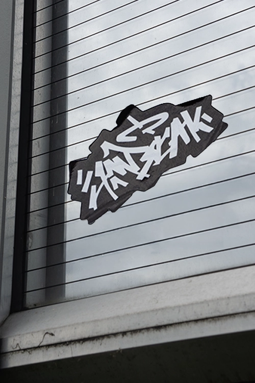

Od wielu lat tworzę własne projekty, traktując je jako przestrzeń do rozwijania stylu. Przez długi czas planowałem stworzenie miejsca, które w pełni przedstawiłoby moją twórczość oraz sposób, w jaki postrzegam design.
Amatuszczak to moja marka artystyczna. Jest projektem, który nie ma określonego końca, ponieważ rozwija się razem ze mną. To przestrzeń, w której mogę swobodnie tworzyć, i eksperymentować.
Na przestrzeni lat tworzyłem projekty w różnych estetykach i testowałem wiele kierunków. Z czasem doszedłem jednak do wniosku, że najważniejsze jest stworzenie czegoś autentycznego, co będzie jednoznacznie kojarzone z moją twórczością.
Chciałem wypracować język wizualny, który w pełni oddaje mnie jako artystę i pozwala budować spójną tożsamość.
In my work, I focus on clarity, balance, and intentional composition. I believe a good design should guide attention naturally while maintaining its own distinct character.
In my work, I focus on clarity, balance, and intentional composition. I believe a good design should guide attention naturally while maintaining its own distinct character.

In my work, I focus on clarity, balance, and intentional composition. I believe a good design should guide attention naturally while maintaining its own distinct character.